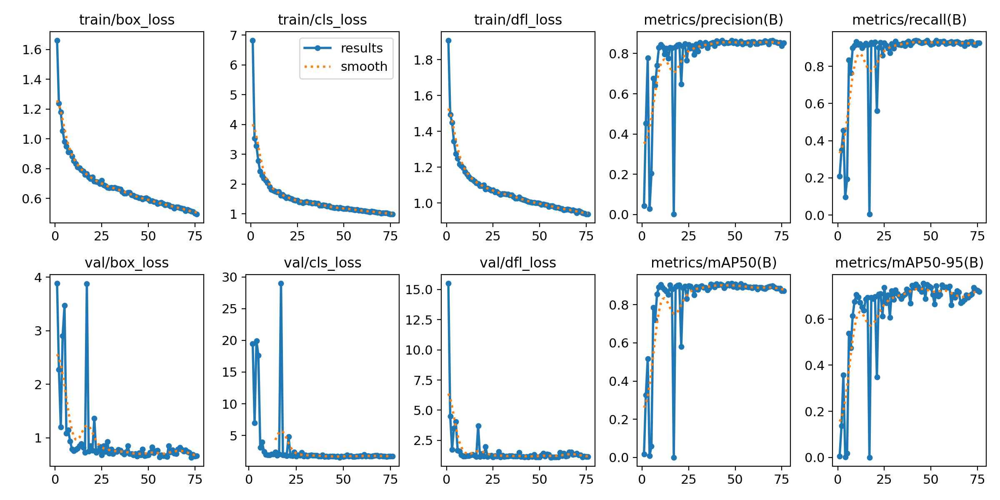
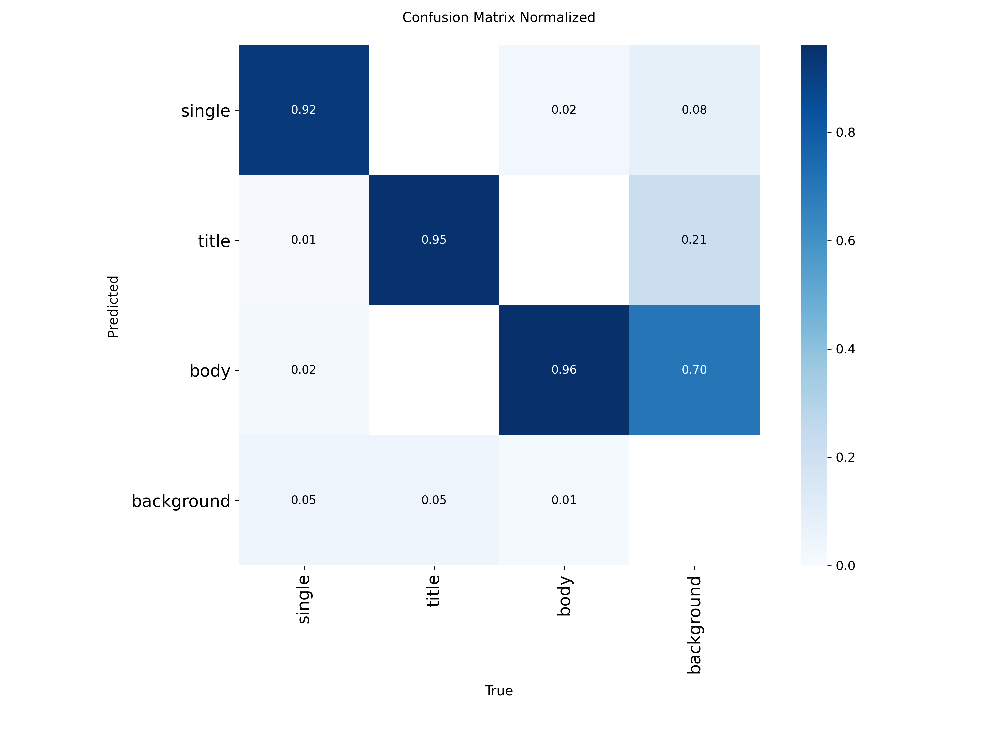
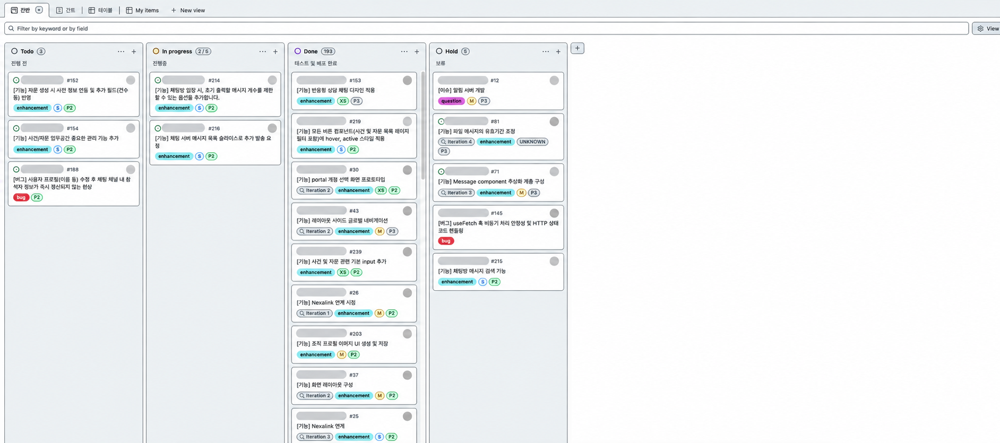
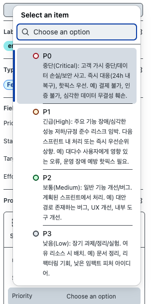
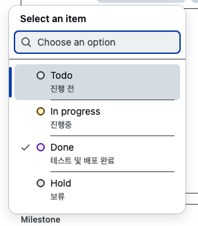
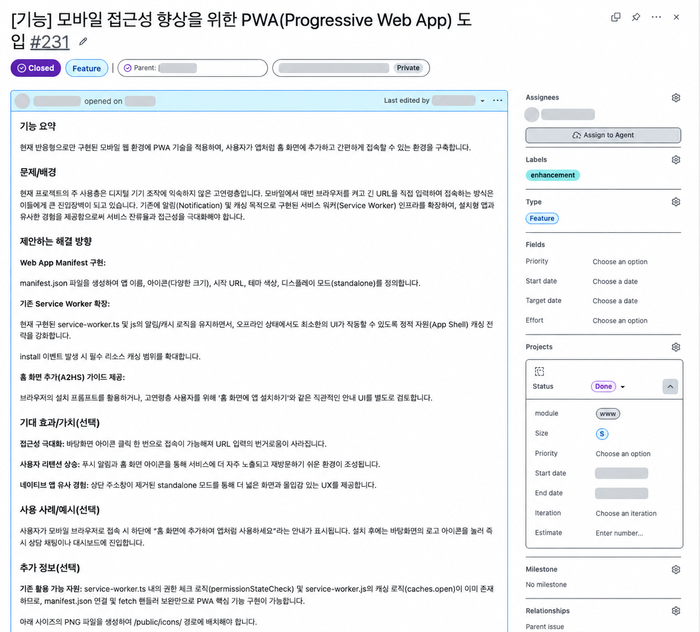

실시간 전달, 컴퓨터 비전, 데이터 아키텍처, 상호작용 UX, 보안, AI-native 개발까지.
상태·경계·운영 규칙을 설계하고 실제 환경에서 검증한 작업을 정리했습니다.
구현 복잡도와 제품 영향이 높은 시스템부터 배치했습니다.
메시지 구조와 소켓 종료 조건을 보완하고, 서비스 워커 알림에 본문·발신자·채널 맥락을 전달했습니다.
const registration =
await navigator.serviceWorker.ready;
await registration.showNotification('새 메시지', {
body: getMessageBody(message),
data: {
cid: message.cid,
hid: message.hid
},
actions: [
{ action: 'open', title: '보기' },
{ action: 'close', title: '닫기' }
]
});
실제 구현 발췌 · 알림 제목 일반화 · 인증 및 연결 주소 생략
if (
webSocket.readyState === WebSocket.OPEN ||
webSocket.readyState === WebSocket.CONNECTING ||
webSocket.readyState === WebSocket.CLOSING
) {
webSocket.close();
}
const delay = Math.min(
1000 * 2 ** reconnectCount, 30000
);
연결 중복 방지 · JSON 파싱 예외 처리 · OPEN 상태에서만 전송 · 가시성/온라인 복귀 시 재연결 · 리스너·타이머 정리
상단은 당시 기여 코드, 하단은 현재 소스에서 확인한 연결 안정화 규칙입니다.
이미지 라벨링과 객체 탐지 작업에 참여했습니다. 실험 로그로 모델별 검증 결과를 비교했습니다.


| 지표 | v8s | v8x | 변화 |
|---|---|---|---|
| mAP@50 | 72.03% | 74.47% | +2.44%p |
| mAP@50:95 | 46.05% | 47.91% | +1.86%p |
| 재현율 | 71.41% | 73.83% | +2.42%p |
| 정밀도 | 81.73% | 82.10% | +0.38%p |
각 폴드의 최고 mAP@50:95 시점 평균. 데이터 설정 경로·입력 1,024px·batch 16은 같고 조기 종료 설정은 다릅니다. 상단 단일 실험과는 검증 데이터 설정이 다릅니다.
반복되는 문자열 속성을 참조 관계로 연결하고, 분석 조회를 공통 저장소 계층으로 옮겼습니다.
이름 기반 매칭과 레거시 이력 조회가 화면마다 흩어져 있었습니다.
관계 키 기반 조회로 전환하고 이력·카탈로그·선택 목록을 3개 저장소로 분리했습니다.
구조 수치는 코드와 조회 경로를 기준으로 검증했습니다.
자동 배치 뒤 수동 조정을 유지하고, 생성·수정·조회 화면에서 같은 데이터를 일관되게 다루도록 개선했습니다.
리사이즈 후 기존 배치 좌표 보존
그리드 점유 폭과 그룹 콘텐츠 폭 일치
미리보기 흔들림과 교환 순서 보완
2개 업무 유형의 생성·수정에 동일한 2개 필드를 연결했습니다.
링크 진입부터 인증, 혜택 적용, 사용 가능 상태까지 사용자의 원래 의도를 유지하는 전환 경로와 복구 경로를 구현했습니다.
진입 시점의 인증 상태와 목적을 기록해 다음 화면으로 전달했습니다.
인증 완료 뒤 저장된 정보를 바탕으로 혜택 적용을 다시 시도했습니다.
사용 가능 여부와 사용량 한도를 별도의 정책으로 해석해 화면 흐름과 결합했습니다.
운영 화면의 검색·필터·페이지네이션을 보완하고, 역할·세션·요금제 정책과 사용량 집계를 실제 제품 제어로 연결했습니다.
역할과 세션을 분리하고, 요금제 기반의 사용 가능 범위와 사용량 제한을 적용했습니다. 비동기 처리 결과는 운영자와 사용자 흐름에 맞춰 알림으로 연결했습니다.
검색어, 상태, 기간, 식별자 조건을 정리하고 목록 카운트와 페이지 이동이 같은 조건을 사용하도록 다듬었습니다.
역할 / 세션
↓
정책 / 사용량
↓
검색·필터 / 목록 카운트
↓
페이지네이션 / 결과 재조회
역할·세션·정책·검색 조건을 같은 요청 경로에서 검증했습니다.
세션·역할·테넌트·형식·트랜잭션 경계에서 접근과 상태 변경 규칙을 적용했습니다.
if role != required_role:
raise HTTP 403
if not fullmatch('[A-Z0-9]{10}', code):
raise HTTP 400
SELECT ... WHERE code = :code
FOR UPDATE
역할 기반 접근 제한, 정확한 입력 형식 검증, 바인딩 파라미터, 동시 사용을 막는 행 잠금을 확인했습니다. 코드와 경로는 일반화했습니다.
클라이언트 용량·확장자 검사는 사용성 보호에 가깝기 때문에, 운영 환경에서는 서버측 MIME·매직바이트·용량 재검증과 다운로드 응답 정책을 함께 적용해야 합니다.
기능을 화면, 데이터 계약, 서버 연결, 검증 기준으로 나누고, 이슈의 상태 전환을 통해 구현 범위와 완료 조건을 투명하게 관리했습니다.

공유 필드 2개를 두 업무 유형의 생성·수정 화면 4개에 연결하고, 저장과 조회를 위한 서버·DB 접점 4개를 함께 정리했습니다. 화면과 데이터 계약을 하나의 완료 기준으로 묶었습니다.
메시지 이력은 최초 30개를 보여 준 뒤, 이전 이력을 20–30개 단위로 추가 로드하는 설계를 이슈로 관리했습니다.
사용자 맥락·문제·해결 방향·검증 범위를 일관된 이슈 구조로 기록했습니다.
무엇을 바꾸는지와 사용자에게 일어날 변화를 한 문단으로 정의합니다. 카드 제목만으로는 빠지기 쉬운 사용자 맥락을 고정합니다.
현재 사용 흐름, 기술적 제약, 해결 목표를 기록합니다. 요청의 이유와 우선순위 판단 근거를 남깁니다.
구현 단위를 나열합니다. 이슈마다 필요한 화면·데이터·인프라 변경과 검증 범위를 명시해 리뷰 가능한 작업 단위로 만듭니다.
선택 항목: 기대 효과·가치 / 사용 사례·예시 / 추가 정보. 필요한 경우에만 근거를 보강하는 확장 섹션으로 사용했습니다.


실제 기능 이슈를 기준으로 Manifest, Service Worker, App Shell을 연결해 모바일 브라우저 진입을 설치 가능한 경험과 최소 오프라인 경험으로 확장했습니다.

설치 진입점, 정적 자산 캐시, 네트워크 실패 시 기본 진입점 복귀를 하나의 기능 범위로 묶었습니다. 화면 요구와 워커 동작을 같은 이슈의 검증 대상으로 관리했습니다.
AI를 모호한 요구를 상태 규칙으로 분해하고 실제 환경에서 반증하는 개발 협업자로 활용했습니다.
문서 조각을 원자적 그룹, 점유, 실제 하단 경계, 저장·복원 규칙으로 다뤘습니다. 드래그 결과는 상태 모델로 검증했습니다.
외부 유입 식별값이 인증 전후에도 유지되고, 최종 등록 뒤 정리되는 상태 전이를 설계했습니다. 새로고침과 인앱 환경을 실제로 확인했습니다.
개발 데이터 영역을 운영과 분리하고, 복원 대상·객체 구조·연결 경로를 검증했습니다. 스키마 후보는 AI가 제안하고 제약 조건은 사람이 승인했습니다.